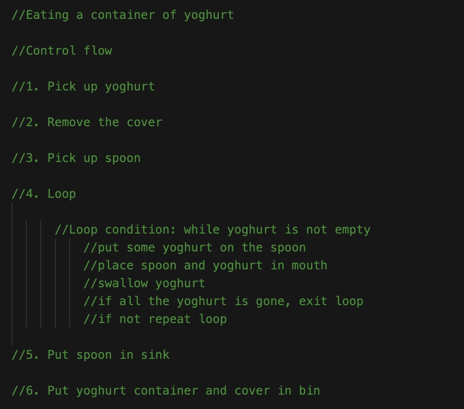
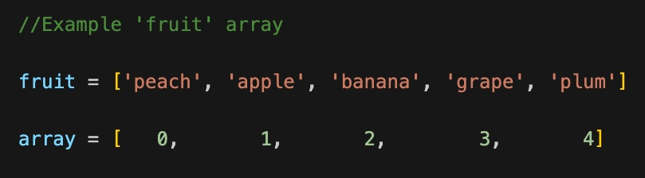
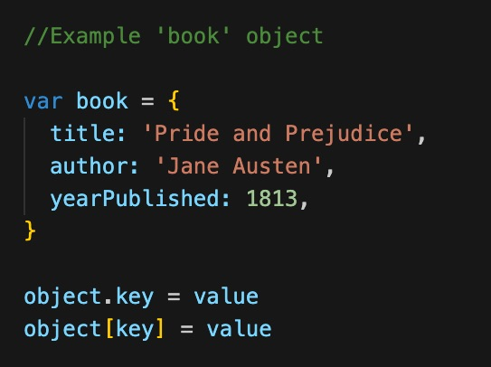
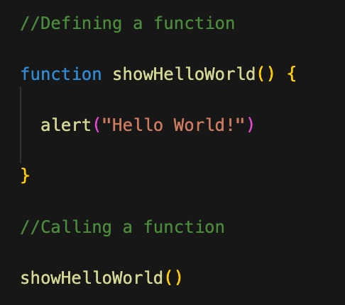

Technical Blog: JavaScript Fundamentals
8 July 2022
What is JavaScript?
JavaScript, HTML and CSS are the three main parts needed for any website to look good and function well. Using the analogy of a car:
- The HTML is the blueprint of the car, it contains the basic structure and framework.
- The CSS controls the style elements of the car, the outer paint colour, the type of upholstery inside and the positions of the seats and screens etc.
- The JavaScript controls the interactive elements of the car, when you turn the wheel left - the car goes left, when you press the accelerator pad it goes forward, when you press the radio button it turns on etc.
Control flow and loops
The control flow is the sequential order in which a computer reads and executes code, it is a set of instructions the computer will follow exactly from the first line of a program, to the last line.
Loops are a part of many pieces of code, they tell the computer to stop proceeding down the set of instructions and repeat a specific action until a certain condition is met, once the condition is met the computer can continue through the rest of the code.
An example from everyday life that helps represent control flow and loops is eating yoghurt - the control flow could be similar to:

What is the DOM?
The DOM stands for the Document Object Model, it is an interface that allows programs to change web documents. It represents the document as nodes and objects and allows programming languages to access, interact and change the document and its different elements.
You can use DevTools to interact with the DOM. DevTools are web development tools that help developers test and debug their webpage code. All major web browsers have built-in DevTools that you can access while on a webpage by using a key-shortcut or hovering over an item, right-clicking and selecting the 'inspect' or 'inspect element' option from the drop down menu. DevTools allow you to make changes to HTML, CSS, JavaScript, as well as the DOM.
Arrays and objects
Arrays create and store lists of data within a single variable. They are useful when you want to access items in a list by their numerical position in the list. Every item in the list has an index position and it is important to note that the first item in an array always has an index of 0, the second item an index of 1, etc.

Objects however are used to represent a 'thing' that can be described by a set of characteristics or properties that have a key and a value - called a key : value pair. For example, a book object could have a key of title with a value of 'Pride and Prejudice', another key of author with a value of 'Jane Austen' and another key of yearPublished with a value of 1813.

You access data in arrays and objects in very different ways. You access data in an array by its index position in the array, using the example above, fruit[3] would return the data at position index 3 in the fruit array - grape. While you access data in an object by using dot or bracket notation (object.key or object[key] returns value), using the example above, book.yearPublished would return 1813.
Functions
A function allows you to define a block of code, give it a name and then execute it as many time as you like. They are especially useful if you may need to perform an action in your code more than once, instead of rewriting the same block of code each time, you simply call the function again. You first need to define a function by using a function keyword then writing the code to be performed inside the function, then to make the function happen you need to call it somewhere else in the code.
